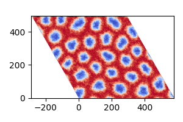

Skyrmion Phase using Monte Carlo


This example simulates the magnetic skyrmion phase using Monte Carlo methods. The parameters for the system are taken from the paper:
- "Very large Dzyaloshinskii-Moriya interaction in two-dimensional Janus manganese dichalcogenides and its application to realize skyrmion states," Physical Review B, vol. 101, p. 184401 (2020).
Here, we replicate the skyrmion phase of MnSTe shown in Figure 4 of the paper, simulating at a temperature of 10K and an external field of 1.5T.
using MicroMagnetic
using NPZ
@using_gpu() # Enable GPU acceleration if available.Relaxation function to compute the skyrmion phase.
function relax_system(; Hz = 0.1)
#Create a triangular mesh with periodic boundary conditions in the x and y directions.
mesh = TriangularMesh(nx = 160, ny = 160, pbc = "xy")
#Initialize the Monte Carlo simulation object.
sim = MonteCarlo(mesh; name = "mc")
#Set up the initial magnetization with random orientation.
init_m0_random(sim)
#Add simulation parameters:
#Exchange interaction.
add_exch(sim; J = 10.52 * meV)
#Dzyaloshinskii-Moriya interaction (DMI).
add_dmi(sim; D = 2.63 * meV, type = "interfacial")
#Zeeman interaction with external field Hz.
mu_s = 3.64 * mu_B # Magnetic moment per spin.
add_zeeman(sim; Hz = Hz * mu_s)
#Uniaxial anisotropy.
add_anis(sim; Ku = 0.29 * meV)
#Perform high-temperature annealing to prepare the system.
Ts = [100000, 1000, 500] # Annealing temperatures (in K).
for T in Ts
sim.T = T
run_sim(sim; max_steps = 10_000, save_vtk_every = -1, save_m_every = -1)
end
#Gradual cooling to reach the target temperature of 10K.
for T in 100:-10:10
sim.T = T
run_sim(sim; max_steps = 50_000, save_vtk_every = -1, save_m_every = -1)
end
#Save the final results.
save_vtk(sim, "final.vts") # Save magnetization as a VTK file.
npzwrite("final_m.npy", Array(sim.spin)) # Save magnetization as a NumPy file.
endrelax_system (generic function with 1 method)Uncomment the following line to run the simulation with an external field of 1.5T.
#relax_system(Hz = 1.5)The final magnetization data is saved in "final.vts" and "final_m.npy". You can visualize the results using ParaView or Python. Below is an example Python script:
import numpy as np
import matplotlib.pyplot as plt
from matplotlib.transforms import Affine2D
# Load the magnetization data.
m = np.load("final_m.npy")
m = np.reshape(m, (3, 160, 160), order='F') # Reshape to a 3x160x160 array.
dx = 3.6
# Plot the z-component of the magnetization (m_z).
fig, ax = plt.subplots(figsize=(3, 2))
im = ax.imshow(
np.transpose(m[2, :, :]),
extent=[0, 160 * dx, 0, 160 * dx * np.sqrt(3) / 2],
origin='lower',
cmap='coolwarm'
)
# Apply a skew transformation to create a hexagonal visualization.
transform = Affine2D().skew_deg(-30, 0) + ax.transData
im.set_transform(transform)
# Adjust the x-axis limits to center the visualization.
ax.set_xlim(-80 * dx, 160 * dx)
plt.tight_layout()
plt.savefig("final_m.png")The plot should look like this:

This page was generated using DemoCards.jl and Literate.jl.